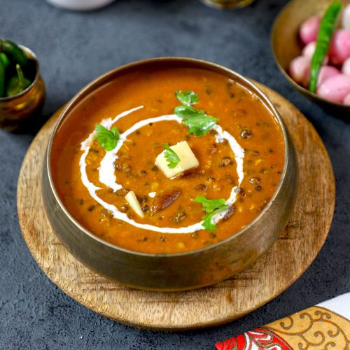

Dal Makhani (Indian Lentils)

Description
Dal Makhani is an Indian dish originating in Delhi. A relatively modern variation of traditional lentil dishes, it is made with urad dal (black lentils) and other pulses, and includes butter and cream
Ingredients
- 1 cup lentils
- 1/4 cup dry kidney beans (Optional)
- Water to cover
- 5 cups water
- Salt
- 2 tablespoons of vegetable oil
- 1 tablespoon cumin seeds
- 4 cardamom pods
- 1 cinnamon stick, broken
- 4 bay leaves
- 6 whole cloves
- 1 1/2 tablespoons ginger paste
- 1 1/2 tablespoons garlic paste
- 1/2 teaspoon ground turmeric
- 1 pinch cayenne pepper or more
- 1 cup canned tomato puree or more
- 1 tablespoon chili powder
- 2 tablespoons ground coriander
- 1/4 cup water
- 2 tablespoons dried fenugreek leaves (Optional)
- 1/2 cup cream (Optional)
Steps
- Place lentils and kidney beans in a large bowl; cover with plenty of water. Soak for at least 2 hours or overnight. Drain.
- Cook lentils, kidney beans, 5 cups water, and salt in a pot over medium heat until tender, stirring occasionally, about 1 hour. Remove from heat and set aside. Keep the lentils, kidney beans, and any excess cooking water in the pot.
- Heat vegetable oil in a saucepan over medium-high heat. Cook cumin seeds in the hot oil until they begin to pop, 1 to 2 minutes. Add cardamom pods, cinnamon stick, bay leaves, and cloves; cook until bay leaves turn brown, about 1 minute. Reduce heat to medium-low; add ginger paste, garlic paste, turmeric, and cayenne pepper. Stir to coat.
- Stir tomato puree into spice mixture; cook over medium heat until slightly reduced, about 5 minutes. Add chili powder, coriander, and butter; cook and stir until butter is melted.
- Stir lentils, kidney beans and any leftover cooking water into tomato mixture; bring to a boil, reduce heat to low. Stir fenugreek into lentil mixture. Cover saucepan and simmer until heated through, stirring occasionally, about 45 minutes. Add cream and cook until heated through, 2 to 4 minutes.